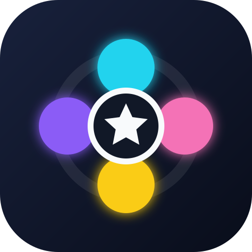

⚙
?
הניחו לפחות 2 אצבעות על המסך
Finger Fate 2

Finger Fate
הגדרות בחירת הזוכה
הכלל הפעיל לפי השעה
--:--
◉
00:00–01:00
הראשון שמניח אצבע
בחר מצב זכייה
נשמר אוטומטית
לוח הזכייה לפי שעות
רטט בזכייה
צליל בזכייה
שמור וחזור למשחק
התקן כאפליקציה בטלפון
כדי לפתוח שוב את ההגדרות: החזק אצבע אחת על מסך המשחק במשך 5 שניות.